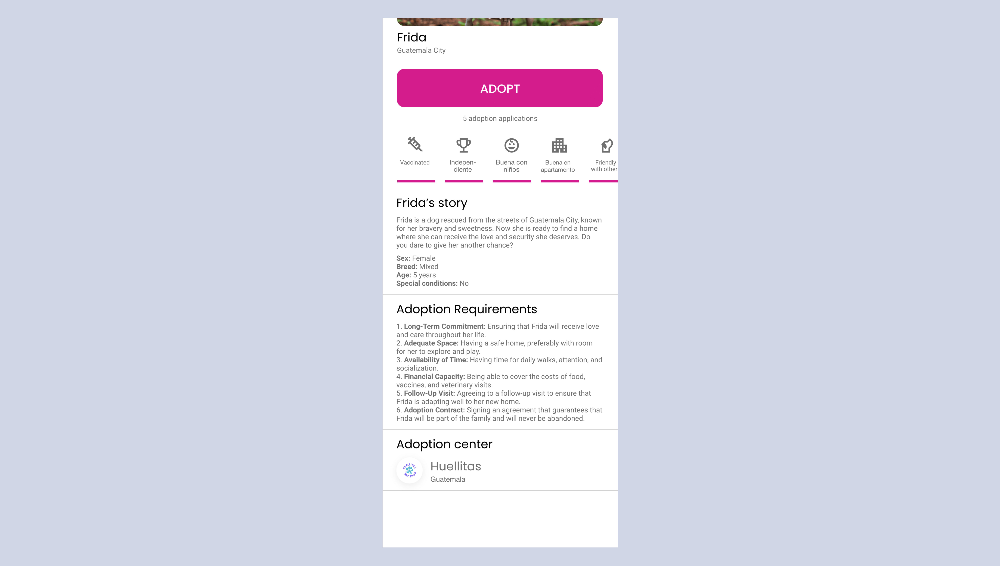
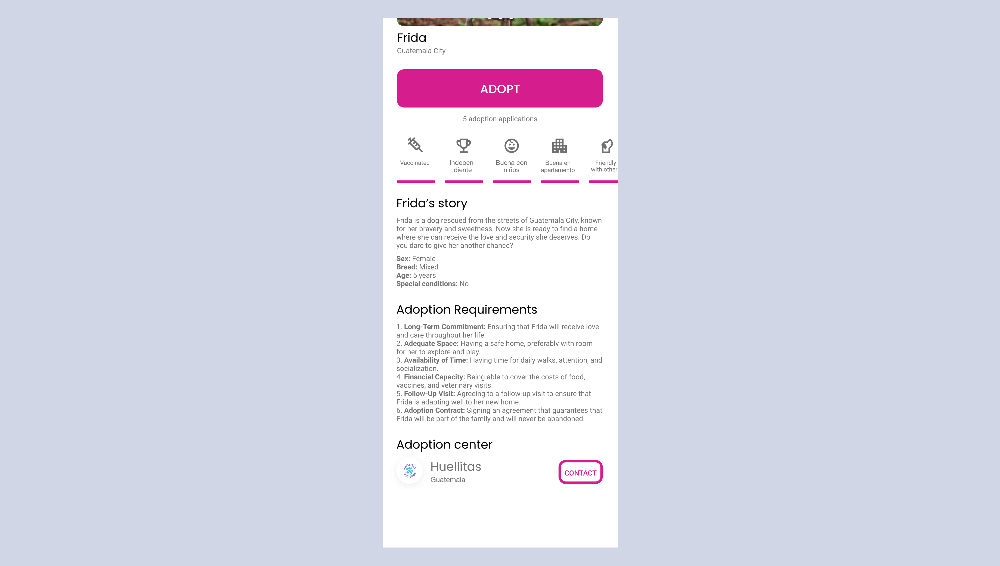
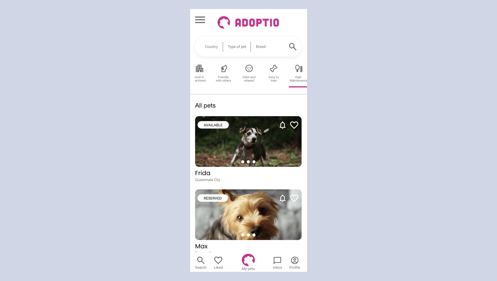
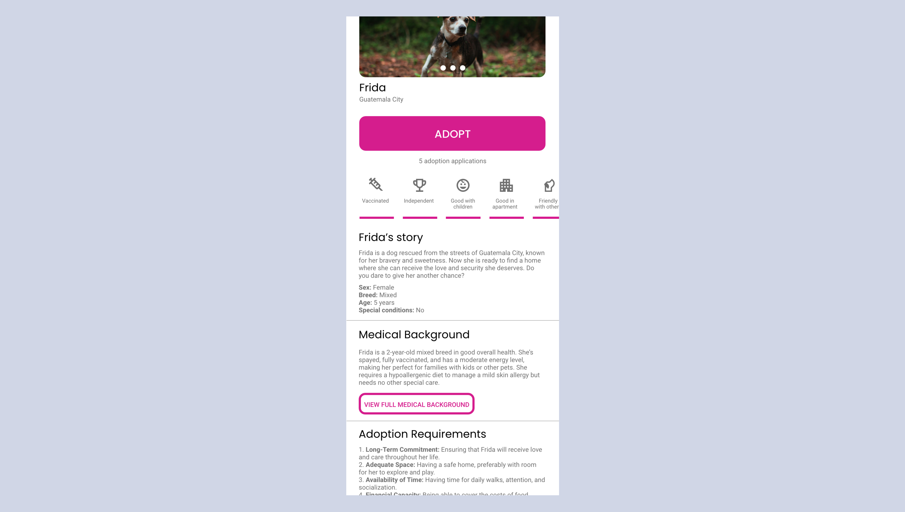

Adoptio started as a practice project for the Google UX Design Certificate course.
However, during my research, I realized the lack of adoption apps in developing countries. Inspired by this
gap
and my passion for design and social impact, I decided to turn Adoptio into a real project that I plan to
bring
to life in 2025. The UX design is now complete, featuring a user-centered approach that simplifies and
enhances
the pet adoption journey. With the potential to significantly increase adoption rates and improve animal
welfare,
the next step is to develop the app using React, ensuring a seamless and responsive experience for users.
Adoptio
is poised to become a transformative tool for connecting pets with their forever homes.
Case Study
Project Overview
The Problem
Many pet lovers in developing countries struggle to find reliable, accessible platforms to adopt pets,
leaving countless
animals in shelters or on the streets without homes.
The Goal
Design and develop an intuitive mobile application that simplifies the pet adoption process, making it
accessible, engaging,
and secure for users, while increasing adoption rates and improving animal welfare.
My Role
User Experience (UX) Designer and Developer.
Responsibilities
Conduct user research
Identify pain points
Ideate solutions
Create wireframes
Conduct usability studies
Develop prototypes
Implement in React
User Research
Summary
User research revealed both the scale of the stray pet issue and the needs of potential adopters.
Quantitative data highlighted
the problem: Colombia has an estimated 900,000 stray dogs and cats, while Guatemala and Albania also face
significant challenges
with overpopulation of stray animals in urban areas. Surveys showed that 85% of respondents felt the lack of
accessible adoption platforms was a barrier, and 70% indicated they would adopt more readily if the process
were simpler and more transparent.
Qualitative insights from interviews provided deeper understanding. Participants expressed frustrations with
delays in communication with adoption centers, insufficient information about pets (such as health and
behavior), and a lack of real-time updates on availability. Many emphasized the importance of tools that
encourage responsible pet ownership. These findings directly shaped Adoptio’s user-centered design, ensuring
the app meets the needs of adopters while addressing the stray pet crisis in these regions.
User Personas
María
"Adopting is more than giving a home; it’s giving love, hope, and a second chance to those who need
it most."
Goals
To adopt pets responsibly and ensure they receive the love and care they need.
Frustrations
Slow responses when adopting through social media or online platforms.
The welfare of the animals post-adoption.
María, a 35 year-old mom, married with two kids. A teacher by heart. She is deeply moved by
the plight of abandoned animals. She sees adopting pets as a way to provide a loving home and to teach
her children compassion. She believes every animal, regardless of age, size, or breed, deserves a
chance at a better life.
User Journey Map
(Click on image to enlarge)
User Flow
(Click on image to enlarge)
Information Architecture
(Click on image to enlarge)
Paper Wireframe
(Click on image to enlarge)
Digital Wireframe
(Click on image to enlarge)
Low-fidelity Prototype
(Click on image to enlarge)
High-Fidelity Prototype
(Click on image to enlarge)
Sticker Sheet
I added a Sticker Sheet to make it easy to develop the app's unique components and styles.
(Click on image to enlarge)
Usability Study
A remote usability study was conducted with five participants from various regions to evaluate the ease of
use and effectiveness of Adoptio in addressing user needs. The study focused on identifying pain points and
potential improvements to enhance the adoption process.
We gathered and organized the data, which led to the following key insights:
Round 1 Findings
Users wanted more options to contact the Adoption Center directly.
Participants suggested more filters for pet characteristics, such as the amount of hair or maintenance
required.
Round 2 Findings
Users wanted to see a better description of the pet's medical history before adopting.
Before And After




Accesibility
To prioritize accessibility, the app interface includes options to toggle between languages, making it more
inclusive for users in different regions. A light and dark mode feature was implemented to accommodate those
sensitive to screen brightness. Additionally, prominent headers and alternative text (alt) for images were
added to ensure compatibility with screen readers, improving the experience for visually impaired users. These
considerations make Adoptio more user-friendly and accessible to a wider audience.
Takeaways
This project taught me the importance of deeply understanding user needs, such as the desire for a
streamlined, accessible, and transparent adoption process. User research highlighted that building trust and
providing clear, intuitive solutions are key to creating meaningful and impactful user experiences. By
prioritizing accessibility and user-centered design, I gained valuable insights into designing products that
can drive social change and foster loyalty in underserved markets.
Next Steps
Developing the app using React: The next step is to bring Adoptio to life, connecting
more pets with loving families and addressing the adoption gap in developing countries.
Designing new features: I plan to design and prototype features suggested during the
usability study, such as post-adoption photo uploads and a social media-style feed.
Expanding research: I will conduct additional user and usability studies with Adoption
Centers to create a complementary back-end app that streamlines their workflows.
Conclusion
Adoptio represents more than just a design project—it’s a tool that has the potential to transform lives by
connecting pets with loving families, addressing a critical need in developing countries. This experience
taught me the value of combining user-centered design with social impact, and how thoughtful research and
usability can drive meaningful change. If you'd like to discuss this project or future opportunities, feel
free to contact me at hello@uxrodrigo.com.
Thank you very much!
Let's get in touch
Have a project in mind? Let's build something great together!